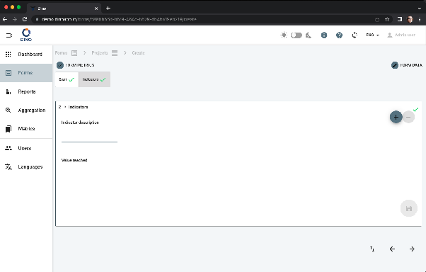

Імпорт даних
Сторінка Імпорт даних дозволяє масово завантажувати дані в form schema з файлу .xls, .xlsx або .csv. Двоетапний майстер проведе вас через завантаження файлу та зіставлення стовпців файлу з полями form.

Доступ до сторінки імпорту
- Перейдіть до списку Forms і виберіть form schema.
- У поданні даних form натисніть Імпорт (кнопка на панелі інструментів).
Крок 1 — Завантаження файлу
На першому кроці відображається зона перетягування або засіб вибору файлу.
- Підтримувані формати:
.xls,.xlsx,.csv - Максимальний розмір файлу: 20 МБ
Щоб завантажити:
- Перетягніть файл у пунктирну область або натисніть Вибрати файл, щоб знайти його.
- Після вибору назва файлу з'явиться в чипі разом із кількістю виявлених стовпців.
- (Необов'язково) Залиште позначку Повторно використовувати наявні метрики з такою ж назвою (типово), щоб будь-яка метрика у файлі, назва якої збігається з метрикою, що вже є в системі, була пов'язана з цією наявною метрикою замість створення дубліката. Зніміть позначку, щоб завжди створювати нові метрики.
- Натисніть Далі (або мітку кроку «2 · Зіставити поля»), щоб продовжити.
Форматування файлу для імпорту
Дивіться опис у розділі нижче
Прості формати файлів
Dino приймає той самий файл, отриманий під час експорту. Отже, найпростіший спосіб отримати файл, належним чином відформатований для імпорту, — спочатку експортувати деякі дані form з тієї ж схеми, а потім видалити рядки з експортованими даними, залишивши лише заголовки стовпців. У будь-якому разі переконайтеся, що заголовки стовпців зрозумілі — вони використовуватимуться як підказки під час зіставлення.
Метрики, ідентифіковані за ID
Якщо стовпець метрики у вашому файлі містить ID (UUID) метрики, цей рядок пов'язується з наявною метрикою з цим ID, і нова метрика не створюється. ID має пріоритет над назвою метрики, тому це відбувається незалежно від опції Повторно використовувати наявні метрики з такою ж назвою (яка застосовується лише до зіставлення за назвою).
Крок 2 — Зіставлення полів
Після завантаження ви побачите таблицю зі всіма стовпцями з вашого файлу. Кожен рядок має три стовпці:
- Стовпець файлу – вихідний заголовок з вашого файлу.
- Поле form – випадний список, де ви вибираєте відповідне поле form.
- Статус – показує, чи стовпець зіставлено, проігноровано або чи є помилка.
Дії зіставлення
- Вибір поля form – відкрийте випадний список для стовпця та виберіть правильне поле. У випадному списку можна виконувати пошук.
- Ігнорування стовпця – виберіть опцію — Ігнорувати цей стовпець — у випадному списку або натисніть кнопку Ігнорувати в стовпці статусу. Проігноровані стовпці відображаються сірим.
- Відновлення проігнорованого стовпця – натисніть кнопку Відновити в стовпці статусу.
Автоматичне зіставлення
Натисніть Автоматичне зіставлення, щоб Dino автоматично зіставив стовпці з полями form на основі схожості назв. Це хороша відправна точка — перегляньте та за потреби скоригуйте зіставлення.
Автоматичне зіставлення найкраще працює із заголовками, які точно збігаються з мітками полів або містять схожі ключові слова.
Повторення
Якщо вибране поле form є повторюваним полем (наприклад, кілька номерів телефонів), під випадним списком з'явиться поле введення Повторення. Введіть індекс повторення (0, 1, 2, …), щоб призначити цей стовпець файлу одному входженню повторюваної групи.
Зведення на панелі інструментів
У верхній частині області зіставлення відображаються три чипи:
- Усього стовпців – кількість стовпців файлу.
- Зіставлено – стовпці, призначені полю form.
- Проігноровано – стовпці, які ви вирішили проігнорувати.
Використовуйте поле введення Пошук стовпців, щоб відфільтрувати таблицю за назвою стовпця файлу.
Застосування імпорту
Коли всі потрібні стовпці зіставлено й помилок немає, кнопка Застосувати імпорт стає активною. Натисніть її, щоб розпочати імпорт. Під час обробки з'являється індикатор. Ви можете натиснути Назад, щоб повернутися до кроку 1, або скасувати імпорт.
Після успішного імпорту ви повертаєтеся до списку даних form, де з'являються нові дані.
Дублювання зіставлення
Якщо ви зіставите те саме поле form з більш ніж одним стовпцем файлу, відобразиться помилка перевірки, і кнопка Застосувати імпорт залишатиметься неактивною, доки це не буде виправлено.
Формат файлу
Ми описуємо процедуру імпорту деяких масових даних за допомогою файлу Excel, згенерованого з Google Sheet. Та сама процедура діє для файлів CSV або під час безпосередньої роботи з Excel.
Припустімо, ви хочете імпортувати дані у form під назвою Projects, який має 2 слайди, один з яких є повторюваним слайдом:

Form Projects було створено за допомогою такого XLSForm. Аркуш «survey» має вигляд
| type | name | label |
|---|---|---|
| begin group | start | Start |
| select_one countries | country | Country |
| select_multiple countries | country_other | Other Countries |
| text | title | Project Title |
| date | project_date_start | Start date |
| select_one donors | selected_donor | Donor |
| integer | budget | Budget |
| boolean | isleader | Leading applicant |
| end group | ||
| begin repeat | indicators | Indicators |
| text | indic | Indicator description |
| integer | value_indic | Value reached |
| end repeat |
а «choices» має вигляд
| list_name | name | label |
|---|---|---|
| donors | ue | UE |
| donors | govita | ITALIAN GOVERNMENT |
| donors | un | UN |
| donors | pub | ALTRI DONATORI PUBBLICI |
| donors | la | ENTI LOCALI |
| donors | priv | DONATORI PRIVATI |
| donors | other | Others |
| countries | AFG | Afghanistan |
| countries | ALB | Albania |
| countries | DZA | Algeria |
| countries | ASM | American Samoa |
Виконайте такі кроки:
- Створіть порожній файл лише з одним аркушем (назви файлу й аркуша не мають значення).
- У першому рядку потрібно вказати назви полів form і специфічних для DINO полів form. У цьому прикладі полями form можуть бути:
- country
- country_other
- title
- project_date_start
- selected_donor
- budget
- isleader
- indic (*)
- value_indic (*)
зверніть увагу, що поля в повторюваних слайдах потрібно обробляти інакше (саме тому ми поставили зірочку). Будь ласка, зверніться до відповідного розділу нижче.
Специфічними для DINO полями можуть бути:
- created_at. Дата створення form. Вказуйте це, лише якщо ви хочете, щоб ваші form мали дату створення, відмінну від дати імпорту;
- user_data_ref_id. ID користувача, який буде пов'язаний з form (типово — ID користувача, який імпортує form);
- area_id. ID метрики AREA, яку потрібно пов'язати з form;
- [area_name]
- case_id. ID метрики CASE, яку потрібно пов'язати з form;
- [case_name]
- project_id. ID метрики PROJECT, яку потрібно пов'язати з form;
- [project_name]
- [project_code]
- location_id. ID метрики LOCATION, яку потрібно пов'язати з form;
- [location_name]
- organization_id. ID метрики ORGANISATION, яку потрібно пов'язати з form;
-
[organization_name]
-
кожен рядок відповідатиме іншому новому form. Отже, якщо ми створимо файл з одним заголовком +, скажімо, 5 рядками даних, у разі успішного завантаження ми створимо 5 нових form у DINO.
- Не обов'язково мати стовпець для кожного поля form; не обов'язково заповнювати всі рядки певного стовпця, але якщо поле порожнє для всіх рядків, його можна пропустити,
- Поля дати потрібно форматувати як YYYY-MM-DD у вигляді тексту (будьте уважні).
- Поля з одним вибором повинні містити один із прийнятих варіантів, зазначених у «choices» (дивіться конструктор form або файл XLSForm).
- Поля з множинним вибором потрібно форматувати за таким шаблоном: [opt1, opt2] (тобто список варіантів у квадратних дужках).
Наприклад, допустимим файлом може бути такий:
| country | country_other | title | project_date_start | budget | isleader | area_id |
|---|---|---|---|---|---|---|
| ALB | [AFG,DZA] | Human rights in education | 2022-01-28 | 120000 | true | 81387ff7-5c7d-44e7-9dc6-76b8d09265ac |
| ASM | A new approach to social justice | 2022-02-14 | 20000 | 81387ff7-5c7d-44e7-9dc6-76b8d09265ac |
У цьому випадку ми імпортуємо 2 form, для обох ми вибираємо лише метрику AREA. Крім того, зауважте, що ми надаємо не всі поля form для всіх form, але для полів, де ми надаємо значення, ми суворо дотримуємося вказівок, описаних вище.
Робота з метриками під час імпорту
Під час імпорту деяких даних form, що стосується метрик, ви можете хотіти:
- створити нові метрики під час імпорту
- повторно використати вже створені метрики
Правила, яких потрібно дотримуватися для коректного керування метриками, такі:
| МЕТРИКА | СТВОРЕННЯ З UI | СТВОРЕННЯ З ІМПОРТУ | СТВОРЕННЯ + ПРИЗНАЧЕННЯ З ІМПОРТУ | ВИКОРИСТАННЯ З ІМПОРТУ | СТВОРЕННЯ + ПРИЗНАЧЕННЯ З ІМПОРТУ (parent) | ВИКОРИСТАННЯ PARENT |
|---|---|---|---|---|---|---|
| Case | name | name | name | id або name (з опцією reuse), або обидва | name | id або name (з опцією reuse), або обидва |
| Organization | name | name | name | id або name (з опцією reuse), або обидва | name | id або name (з опцією reuse), або обидва |
| Location | name | name | name | id або name (з опцією reuse), або обидва | name | id або name (з опцією reuse), або обидва |
| Area | name | name | name | id або name (з опцією reuse), або обидва | name | id або name (з опцією reuse), або обидва |
| Project | name, code | name, code | name, code | id | name, code | id |
Повторювані слайди
Якщо у вас є поле в повторюваних слайдах, його потрібно назвати інакше. Кожне поле в повторюваному слайді потрібно називати \<field_name>__X, де X — номер повторення, від 0 (відповідає одному повторенню) до N-1, де N — загальна кількість повторень слайда в цьому form.
Наприклад, припустімо, у вас є лише 1 повторення повторюваного слайда, і ви хочете додати обидва поля «Indicator description» і «Value reached». Вам потрібно буде додати до файлу імпорту ці два стовпці:
| indic__0 | value_indic__0 |
|---|---|
| Number of children | 100 |
Отже, наприклад, ми могли б мати:
| country | budget | indic__0 | value_indic__0 | indic__1 | value_indic__1 | isleader |
|---|---|---|---|---|---|---|
| ALB | 120000 | Children | 100 | true | ||
| ASM | 20000 | |||||
| AFG | 15000 | Parents | 45 | Schools | 34 | true |
Помилки
Перевірте ID у вашому файлі перед імпортом. Якщо стовпець посилається на сутність за її ID (метрику або користувача), а сутності з таким ID у Dino не існує, імпортовані форми не вдасться синхронізувати із сервером.